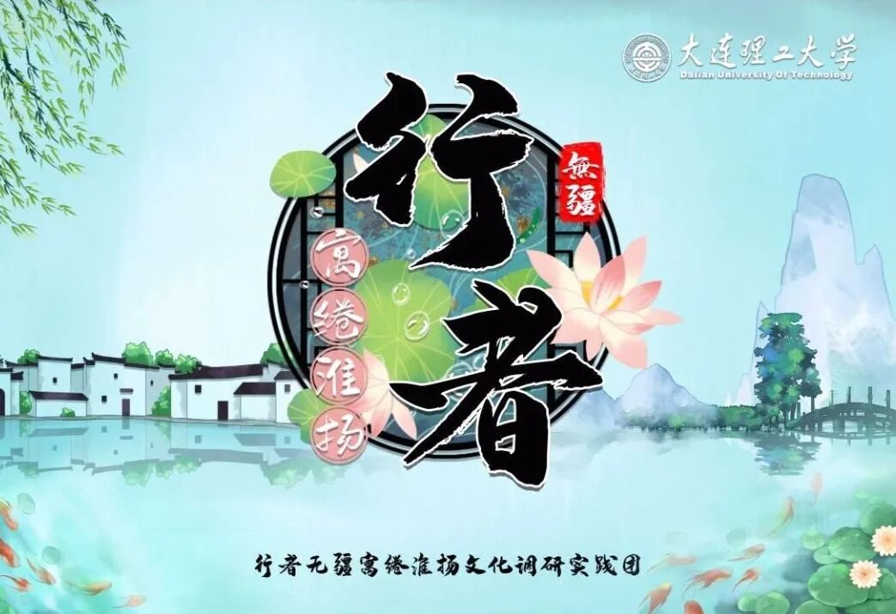
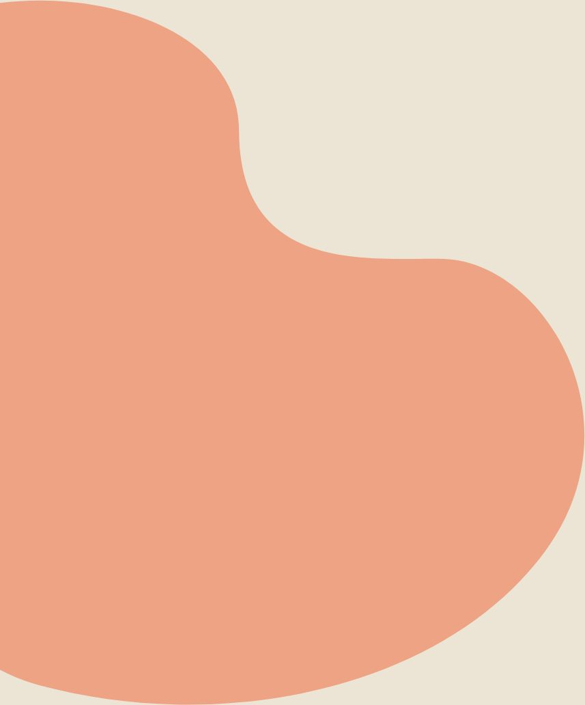
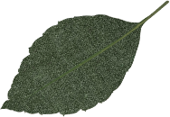
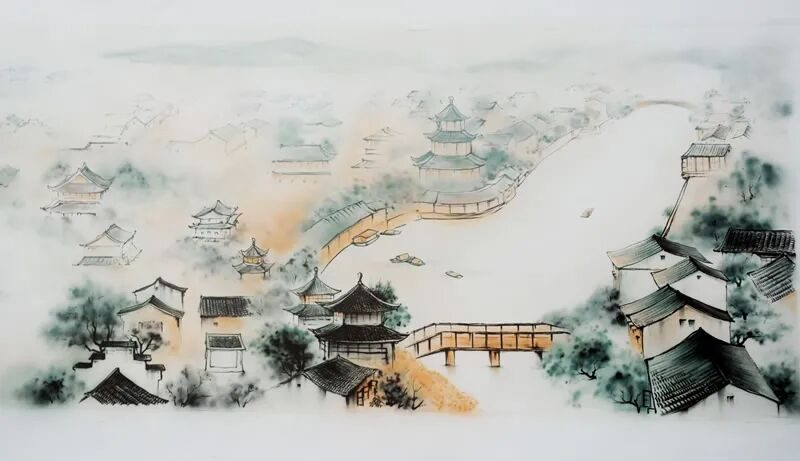
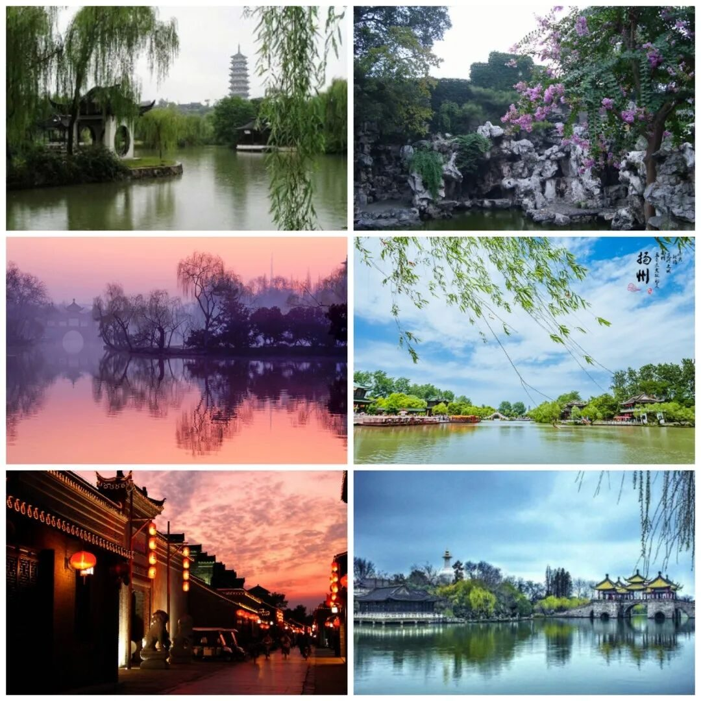
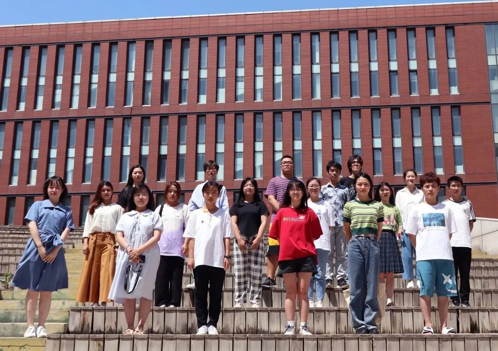
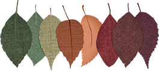

【徜扬恣肆·一】跃入人海，做一朵奔涌的浪花

一只小白，两年实践，三期成长
初遇是期待
重逢是欣喜
再会是欢愉

跃入人海，
做一朵奔涌的浪花
本着留下来帮帮忙的心
开开心心的举起外联组的大旗
却阴差阳错担负起全队的重任
与第九期的行者们一起，共赴扬州之约


实践前五天，行程既定，万事俱备之时
江苏突如其来的疫情打乱了团队的所有计划
无奈退掉了定好的车票和青旅
得到学校允许后，临时将行程改成线上
虽然未能只身前往扬州实属遗憾
调研地的疫情也使得联系采访的对象难上加难
但我承诺过，我会尽力，让团队的线上调研更有意义
在这里真的超级感谢艳虎哥，丰元，还有我所有可爱的队员们，你们是我莫大的精神动力，让我在经历各种坎坷不顺后坚定带领团队继续走下去的决心。这份感情，纯粹而炽热，热烈而执着。
| ||
天下三分明月夜，二分无赖是扬州。
 | ||
说起扬州，丰富的历史文化底蕴下，不仅积淀出扬州的风和月，还有独特的扬州景观，精致的扬州美食以及独具匠心的扬州工艺。“故人西辞黄鹤楼，烟花三月下扬州。”唯有这长江之水天际流，才知道这思念总比西湖瘦。
这扬州西湖折不断的柳，这梦里江南喝不完的酒，这传说中的吹箫玉人只有这扬州城的桥上走。青山隐隐，绿水迢迢，纵豆蔻词工，也难赋深情，旖旎风光，清秀婉曲，终使文人墨客魂牵梦萦……
 | ||
所有的告别意味着新的开始
十分庆幸当年选择了行者
无比荣幸如今成为了行者
前路漫漫，行者们，是文化传承的赤子，也会永远在路上……
 | ||

来源 | 行者无疆实践团
文字 | 付媛
编辑 | 杨静
审核 | 付媛 康艳虎